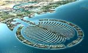

Elche
 De: La Frikipedia, la enciclopedia extremadamente seria.
De: La Frikipedia, la enciclopedia extremadamente seria.
| De la serie ciudades del mundo:
|
| Elche
|
|
|

|
| (Bandera)
|
(Escudo de armas)
|
|
| Topónimo oficial
|
Ilici o Elx/Elche
|
| País
|
España
|
| Código postal
|
032xx
|
| Superficie
|
Argo tenemos
|
| Altitud
|
Aquí bajo las raíces de una palmera.
|
| Distancia
|
Al lado de Alicante y de Murcia
|
| Fundación
|
No se sabe. Al parecer, las mujeres de esta ciudad son Íberas descendientes de la dama.
|
| Población
|
230.000 habitantes (reconocidos)
|
| Gentilicio
|
Ilicitanos, ilicis, piromanos,(para Madrileños domingueros) y Elcheros (para cocainomanos de Alakant)
|
| Alcalde
|
Merche la de cuéntame
|
Elche es una ciudad mundialmente conocida por sus palmeras (hasta en la sopa te crecen). La guerra de petardos a la que van canis gilipollas a quemarse que se hace en las fiestas de Agosto, etcetera, etcetera... Aparte hay mucha gente que la confunde con Alicante y cree que es lo mismo. Es fácil de distinguir entre ellas 2, allí hay corrupción y es toda un desastre. Aqui no tenemos gracia ni pa eso. También los autobuses son viejos, aquí son nuevos. Los palos de los semáforos mas allá de Torrellano y el Aeropuerto son azules. En cambio aquí son verdes como nuestras palmeras y los contenedores de vidrio azul verdoso, (que por cierto también son nuevos).
En la Autovía siempre nos señalan en pequeño como si fuéramos una mierdecita. Y por si fuera poco una alcaldesa que en vez de robar le chupa el culo a su homologa alicantina y que le gusta ponerse el traje de sevillana "Elx is not Al-Andalus". Aparte es la única ciudad donde las emisoras mas escuchadas son la COPE, Intereconomía y Es Radio y resulta que la mayoría son mas rojos que la camiseta del Murcia. El Himno de la ciudad es este: http://www.youtube.com/watch?v=0_b-widQzt4
La 3ª ciudad de la C.V.
Aunque parezca mentira, para algunos Elche es la 3ª ciudad de la Comunidad Valenciana aunque a los dueños de esta (encabezados por Paquito Camps & company) se la sude. Ya que no nos dan ni un duro ni para pan. Y estamos resignados de ver como en Valencia hacen circuitos de F1 por gusto y aquí no hay ni una estación de trenes en condiciones. Sino un pestoso y antigualla cercanías de R.E.N.F.E que pasa cada mil años por la estación.
Por eso se dice que somos la oveja negra de la Comunidad Valenciana.
Grupillos de la zona
En Elche hay muchas tribus que podrian destacar :
- bakani : Resultado de la fusión de un cani y un bakala. Acostumbra a tener las caracteristicas de los canis solo que se drogan más del triple por sus cualidades de bakala. Acostumbran a comer bacalao a todas horas.
- frijo : La mezcla entre un friki y un pijo. Suele ser algo raro puesto que tiene la ropa de pijo y el cuerpo de un friki o al contrario. Normalmente suelen tener los vicios normales del friki pero en algunos casos suelen tener los gustos de pijo (pero llendo a todos sitios con ropa friki aunque sea el primer caso).
- skater : Son como los anteriormente mencionados 'frijo' pero van con una tabla de skate normalmente debajo del brazo. Les encanta usar indumentaria poco práctica como gorras en días nublados o pantalones pitillo. Con su cerebro y sus gónadas exprimidos por estos atropellan ancianas despiadadamente en Santa María.
- carrulo : La mezcla de un cani y un garrulo. Su nombre deriva también de que se les suele ver más por Carrús como zona predominante. Se comporta como los garrulos y suelen tener algunas caracteristicas canis (diferentes en todos). Siempre suelen ir en bandas organizadas y planean dominar el mundo.
- frikala : El resultado de la combinación de un friki y un bakala. Tienen todo el aspecto de frikis pero normalmente se les suele ver comiendo bacalao y fumando porros por la zona dela glorieta y por las cercanías de los bares. Estan en guerra constante con los pijos normales.
- gaprujos : Mezcla de un pijo y un garrulo. De pijos solo tienen que sus padres tienen dinero y tienen muchos yates y coches. Tienen todas las caracteristicas de un garrulo pero normalmente no suelen drogarse.
- Gent del camp y del raval :Es la tribu mas antigua de esta ciudad. Aunque su mentalidad data de los tiempos de Franco esta gente entrañable que solo se expresan en Catalán Occidental no tienen nada que envidiar a los vascos. Ya que si ellos parten troncos con las manos esta gente es capaz de romper un muro de hormigón con su propia cabeza. O de estar 1 semana seguida sin descanso jugando al sarangollo bebiendo vinatxo (vino de la tierra) acostumbran en estar en los bares jugando al sarangollo o al dominó de sol a sol y si se quedan sin dinero se lo cogen a la mujer o al nieto (la presa mas fácil en cada caso).
- Pijikas del sentre : Esta tribu se distingue por que no se quitan ni para dormir el uniforme de su colegio/instituto (de paga como no) Debajo de la faldita llevan un tanga de Calvin Klein ultimo modelo. Sacan 10 en todo y entre ellas hay rivalidad en practicamnte todo. Estan de buen ver la mayoria eso si pero son muy perilloses.
- Gente Normal: por suerte también habemos gente normal, que es la que pone la cordura en esta ciudad a parte de que sabemos Valenciano de Elche aunque con acento Murciano que pa eso estamos pegaícos ha Murcia copón!!!
- Ilicitanos Postizos : toda aquella gente que vino a vivir de pueblos de alrededores como Orihuela o tambien de la Región de Murcia ,Albacete o Granada esta gente es fácil de ver ya que no saben ni papa de Catalan Occidental y en su defecto se expresan en Murciano/Granadino entre otras lenguas.
Elche CF
Es el club de furbo de la ciudad fundado en 1923 rival histórico del Pórcules. Hacía 25 años que no juegaba en 1ª, en la temporada 2012/2013 conseguía el ascenso a primera (por fin, cojones) y la afición de este club la mejor de España (dicho sea de paso) estamos ya hasta las pelotas de desastres un año tras otro y de que los Alicantinos (del Pórcules) también llamados subnormales se rían de nosotros por desastres. Como datos historicos el Elche conguigio meter en un partido de Segunda ha 70.000 personas o ser finalista de la Copa de España o del General Frutanco. Este club esta gobernado por un gordo amorfo que tiene mas dinero que la Duquesa de Alba y Bill Gates juntos y quiere llevar al Elche a 1ª con una afluencia media de 6 abuelicos, 4 gatos 10 corderos y 30 gorrinos ya que trata a los abonados y la afición mas fiel como si fueran mierdas o ratas de cloaca.
Idiomas Oficiales

Lanzamiento de la Palmera Imperial desde la Basilica de Santa María (Elche)

Porculano tirando truenos en la Alborada
Economía
La gran y potente industria del Calzado, o mejor dicho, lo que China nos deja fabricar, también se hacen algunos bolsos para los yankees o camisetas para equipos de furbó (de echo las camisetas del Villarreal y el Cartagena se hacen aqui). Que si que la Puma, la Kelme y la Ribuk estan aqui.
Desde que los Chinos hacen zapatos de calidad mierda. El sector económico ilicitano se ha reorientado hacia sectores como estar en el paro por tiempo indefinido. (Osease estarse tocandose los güevos en casa sin pegar un palo al agua, practicando como único deporte el sillónball, y encima cobrar 420€ por la cara). A dedicarse a abrir y cerrar constantemente bares, inmobiliarias, tiendas de ropa o vender seguros.
Aunque desde que abríerón el Corte Ingles, el Media Markt, etc hay menos paro.
Puntos de interes
- El Corte Ingles (El patío interior es el punto de encuentro de los mañacos del Sector 5º). Se cuenta también que en los sótanos, se reúnen de forma clandestina extraños grupos de poder que ejercen influencia sobre la ciudad.
- L´Aljub
- Carrefour (Incluye Media Markt & Toys ´Urs)
- La A-7 y la A-31 (si quieres salir por peteneras de aqui)
- El Estadio (los aparcamientos y alrededores se usan para hacer botellones)
- El Cauce del Río (si quieres ponerte fuerte) (en caso de querer sufrir mutaciones solo tienes que darte un chapuzón en el río)
- Los Hospitales (por si no tienes otra cosa que perder tiempo o relacionarte con la 3º Edad)
Cosas que tenemos y que a los porculanos no les gustan
- Un estadio catalogado con 4 estrellas de la GUEFA con capacidad para 40.000 personas donde juega sus partidos el Elche.C.F.
- 2 patrimonios de la humanidad.
- Nuestra preciosa "Dama de Elche" o más bien reproducciones, pósters y representaciones de ella por cada rincón de la ciudad (La original está en Madrid). Es única en el mundo, y fue descubierta en L'Alcudia. (Gracias a ella, podemos apreciar la existencia de bonitos rasgos de origen íbero, presentes en muchas mujeres ilicitanas actuales).
- El aeropuerto de l'Altet, que se encuentra dentro de nuestro termino municipal. De hecho los taxis llevan la franja verde del consorcio local de taxistas de Elche (jodeoooooooooos ¬¬)
- La Selección Española de furbó no juega en Alicante, prefieren Elche.
- Diana Palazon, Carolina Cerezuela la ilicitana o Tonico er Munisipal entre otros personajes...
- Un cuerpo de Policia Local de Élite : http://www.youtube.com/watch?v=L3jiRbnQP6w&feature=related
Frases tipicas de un Ilicitano
- El ilicitano no dice hola: te dice "eih" o "wenah"
- El ilicitano no folla: "Se lo monta"
- El ilicitano no se cae: se mete una piña / se pega una ostia
- El ilicitano no se enamora: está enchochao perdío / to pillao
- El ilicitano no insiste: te come la cabeza / te da el follón
- El ilicitano no se lanza: se tira
- El ilicitano no besa: te come la boca
- El ilicitano no tontea con una chica: le tira la cañica
- El ilicitano no bebe mucho: se pone to ciego / lleva una buena ñora
- El ilicitano no es que no entienda: está empanao
- El ilicitano no dice que algo o alguien está debajo o abajo. Dice "Está aquí bajo"
- El ilicitano no acaricia: magrea / sobetea
- El ilicitano no molesta: es cansino / es porculero
- El ilicitano no te golpea: te mete una pasá paloh
- El ilicitano no trabaja a tiempo parcial: ta currando
- El ilicitano no tiene amantes: tiene una pareja que no tiene nada que envidiar ha un ciervo imperial de 8 puntas
- El ilicitano no se impresiona: flipa / se queda muerto
- El ilicitano no se orina: se mea
- El ilicitano no tiene diarrea: se caga por la pata abajo
- El ilicitano no se va de un lugar: se pira / se larga
- El ilicitano no duerme: se queda torrao
- El ilicitano no se ríe a carcajadas: se descojona / se parte el culo
- Al ilicitano no le causan problemas: le joden la vida
- El ilicitano no es un presumido: es un flipao de mierda.
- El ilicitano no es un insensato: es un perdío
- El ilicitano no es buena persona: es buena gente
- El ilicitano no es un tipo tranquilo: tiene unos güebos que se los pisa / y si es ilicitana: tiene un coño que se lo pisa
- El ilicitano no es despistado: está atontao / está empanao
- El ilicitano no es un gandul: es un gosarro
- El ilicitano no hace algo mal: la caga
- El ilicitano no intenta ligar: va de caçeria
- El ilicitano no dice “tardaré en bajar”: dice ahora bajo
- El ilicitano no habla claro: te dice las cosas a la cara.
- El ilicitano no es valiente: tiene güebos
- El ilicitano no miente: mete trolas
- El ilicitano no se lía: se emparanoia
- El ilicitano no está cansado: está reventao
- El ilicitano no es un mal amigo: es un mierdah
- El ilicitano no es falso y ruin: es un julai
- El ilicitano no ve a un/a chico/a feo/a: ve a un callo.
- El ilicitano no te dice que estás equivocado: te dice que las cagao
- El ilicitano no se enfada: se rebota / se mosquea / se pica
- Al ilicitano no le sale algo mal: se le va to a la mierda
- El ilicitano no es sencillamente genial: es la polla
- El ilicitano no es un tacaño: es un ratah
- El ilicitano no es bueno haciendo algo: es un máquina
- El ilicitano no habla demasiado: se enrolla
- El ilicitano no decepciona: es un caso perdido
Autor(es):
- Krusher
- Gñapero Solitario
- Skrupel
- Genericool
- Kairi-chan93
- Espartako
- Pablete97
- Frikisexigirl!!!
- Adrián Jiménez
- Generibot
Frikipedia 2005-2016, Licencia
GFDL 1.2 - Extraído por FrikiLeaks